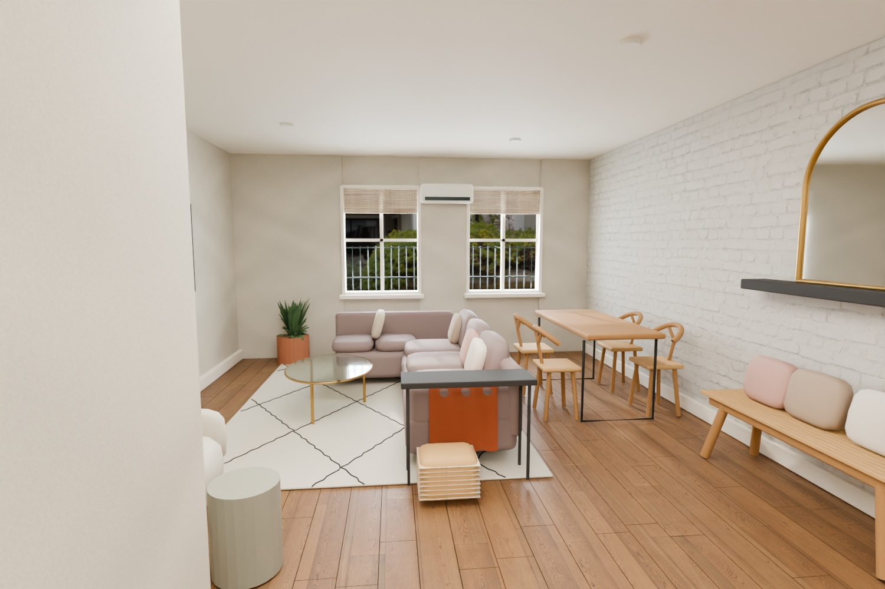

<!doctype html><html lang="en"><meta charset="utf-8"><meta name="viewport" content="width=device-width,initial-scale=1"><title>375 Clinton St · Garden apartment</title><style>
*{box-sizing:border-box}body{margin:0;background:#e9e5db;color:#29342d;font:14px "Helvetica Neue",Arial,sans-serif}canvas{position:fixed;inset:0;touch-action:none;outline:none}header,footer,aside{position:fixed;z-index:1}header{top:24px;left:28px;pointer-events:none}h1{font:normal clamp(26px,5vw,46px) Georgia,serif;letter-spacing:-.045em;margin:0}header p{font-size:13px;margin:6px 0}aside{right:20px;top:20px;display:flex;gap:6px}button,select{font:inherit;color:inherit;border:1px solid #bdbfb4;background:#fffdf6;border-radius:8px;padding:10px;cursor:pointer}button:hover,select:hover{background:#edf0e7}button:focus-visible,select:focus-visible{outline:3px solid #688674}footer{bottom:22px;left:50%;transform:translateX(-50%);text-align:center;width:max-content;max-width:96vw}nav{display:flex;gap:7px;align-items:center;background:#fcfaf2ed;border:1px solid #c5c7ba;padding:7px;border-radius:14px;box-shadow:0 4px 20px #38362e1a;justify-content:center}#hint{background:#fffdf2de;padding:5px 10px;border-radius:6px;display:inline-block;margin:8px 0;font-size:12px}#pad{margin:5px}#pad button{padding:10px 15px;touch-action:none}#view{background:#314c3b;color:white}@media(max-width:650px){header{top:14px;left:14px}aside{top:82px;left:14px;right:auto}footer{bottom:8px}button,select{font-size:12px}}
</style><canvas id="scene" aria-label="Interactive 3D apartment" tabindex="0"></canvas><header><h1>375 Clinton St</h1><p>Garden apartment · Brooklyn</p></header><aside><button id="showRender">Living room render</button><select id="layout" aria-label="Small bedroom layout"><option value="full">Full bed</option><option value="murphy" selected>Murphy bed down</option><option value="stowed">Murphy bed up</option></select></aside><footer><div id="pad" hidden><button data-k="a" aria-label="Step left">←</button> <button data-k="w" aria-label="Walk forward">↑</button> <button data-k="s" aria-label="Walk backward">↓</button> <button data-k="d" aria-label="Step right">→</button></div><span id="hint"></span><nav><button id="view">Walk inside</button><select id="rooms" aria-label="Go to room"><option value="">Go to room…</option><option>Living &amp; dining</option><option>Kitchen</option><option>Entry</option><option>Bathroom</option><option>King bedroom</option><option>Full bedroom</option><option>Garden</option></select><button id="reset" title="Reset overview">Reset view</button></nav></footer><dialog id="renderDialog" style="padding:8px;background:#faf7ef;border:0;border-radius:12px;max-width:92vw"><form method="dialog" style="text-align:right;margin-top:6px"><button autofocus>Back to walkthrough</button></form></dialog><script src="three.js"></script><script src="model.js"></script><script src="viewer.js"></script></html>
